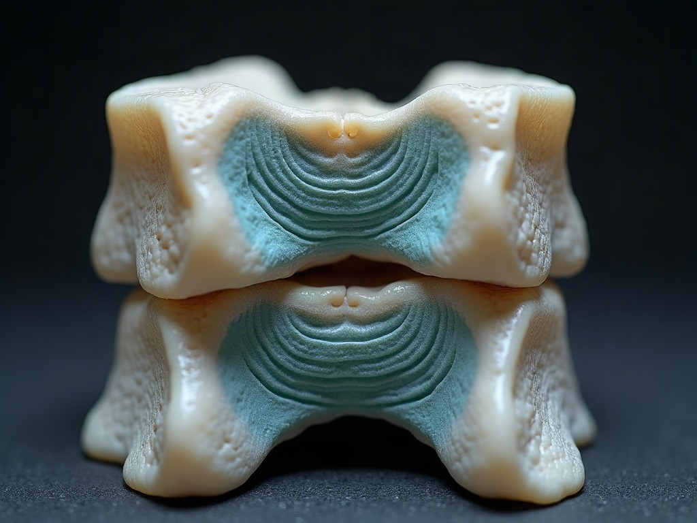

Somebody told you it might be a disc
This page is general information, not medical advice. An examination is needed to know whether we can help you.
A friend, an urgent-care doctor, or the internet has already used the words "slipped disc". It is a lay term, and it covers several different things that are examined and managed differently. This page is about finding out which one you have after a collision. Before we examine you, the price of the evaluation goes in writing.
The guess, and what it costs to act on it
Most people arrive here holding a label nobody examined them to arrive at. Then they wait, on the reasonable theory that these things settle. Some do. In the meantime the usual three options are running: do nothing, take what urgent care provided, or leave all of it until the insurance claim resolves.
A disc injury is a slow story, and that is the specific problem here. Symptoms commonly build over the first days and weeks rather than announcing themselves at the roadside. That build-up happens in exactly the window when nothing is being written down. By the time it is bad enough that you act, the record of how it started does not exist, and you are describing week one from memory in month four.
So the argument for being examined early is about the record and about catching the pattern while it is still developing. It is not a statement about how quickly anybody here can fit you in.

01
Three things you can do after reading this page
Find out whether a disc is actually involved.
An orthopaedic and neurological examination distinguishes a disc-referred pattern from a joint or muscular one. They can feel similar to the person who has one, they are managed differently, and only one of them makes imaging worth the cost and the wait.
Know the cost before you commit.
The price goes in writing before the examination. What funds it, and what happens if the claim does not work out, is answered in one place on the money page.
Get the finding recorded while the injury is recent.
Distribution of the pain, what movements restrict, and any measurable deficit, written down as objective findings rather than as a description of a bad month.
What the examination actually consists of
Card 1. What "slipped disc" actually covers.
A disc is the cushion between two vertebrae. Nothing slips. What varies is how far the material has moved and what it is pressing on:
- Bulge.
- The disc wall pushes outward broadly. Common, often quiet, and frequently found on scans of people with no symptoms at all.
- Protrusion.
- A more focal push in one direction, which may or may not reach a nerve.
- Herniation.
- Material has moved out through the wall. This is the one most likely to produce the travelling leg or arm symptoms people associate with the phrase.
The lay term flattens all three, and the distinction changes what the plan looks like. That is why the examination matters more than the label somebody already handed you.

02
Card 2. The collision mechanism.
In a crash the spine is compressed and bent at speed, and a disc injury caused that way behaves differently from one that came on gradually over years. This is also why this page does not carry a lifestyle list. Your posture and your diet did not do this. A car did, and the opposing adjuster would very much like the page to say otherwise.
Card 3. The examination and the conservative-care path.
Range of motion, neurological testing, and what care actually consists of, including mechanical or traction decompression where it is indicated. Many patients prefer to try conservative care before considering surgery or long-term medication. We can tell you whether we think we can help. How progress is judged is agreed at the start, so you can tell whether something is working rather than being told that it is.
Card 4. Where we stop.
We are not a medical doctor's office, and we do not act for you on the claim. No surgery, no prescriptions, and this is not an emergency room. Weakness that is worsening, a foot that drags, loss of bowel or bladder control, or numbness through the saddle area mean emergency care rather than an appointment here. Imaging, when it is warranted, is performed by another provider, and we name no facilities and imply no formal network.
Around the care itself we can truthfully offer orthopaedic and neurological examination, chiropractic adjustment, which is a controlled movement applied by hand to a joint that is not moving well, insurance verification, medical-lien billing and coordination with your attorney. What a first appointment involves is set out here: your first visit.
03
Proof you can check, or none at all
We do not publish success rates for disc injuries, and we would be inventing them if we did. There is no outcome data on this practice that a stranger could verify, so this page carries none.
There is not much collision-specific proof anywhere in this market either. Search the page where the practice nearest to us collects its patient reviews for the words attorney, lien, whiplash, insurance or settlement, and it returns nothing at all. Which is the point: a small amount of proof that survives being checked is worth more than a wall of generic praise. Until we have proof of the first kind, the honest claim is the boundary in card 4.
04
What this page replaces
What stood on this URL was 120 words. One paragraph. It blamed the reader's posture, smoking, exercise and nutrition for an injury sustained in a car crash, mentioned no collision, no insurer, no attorney and no cost anywhere, and finished by urging the reader to come in at once, which was a promise about scheduling this practice had made no commitment to keep.
When the owner reviewed the claims across these pages in 2026, the decision was to drop all of them. That includes the sibling page's line about one form of care being the better option than surgery or medication. This page argues the same conservative-care territory and it deliberately does not re-import that claim in different words: what is here is a patient preference and a professional opinion, not a ranking of treatments.
The stance line: a disc injury is worth more than a paragraph, and the first thing you should be told is what finding out will cost.
05
Asked in the room
Questions a disc page actually receives
Do I need an MRI before you will see me?
No. A scan is also less decisive than people expect: bulges show up routinely in people with no symptoms, so an image on its own does not tell you what is causing your pain. The examination is what connects a finding to a symptom. If imaging is warranted after that, we say so and send you for it.
Will I end up needing surgery?
We will not predict that, and be wary of anyone who does. The question is normally answered by what the examination finds, how the injury responds to conservative care over a period, and a surgeon's opinion where one is indicated. We can tell you which of those steps you are at.
Who pays for this?
There is no rate card here, and this page publishes no price on purpose. Care is funded through auto or health insurance, a medical lien against the personal-injury settlement, or cash, decided case by case, and the whole picture sits on one page. How care is paid for.
What if the claim fails, or settles for less than the bill?
You owe nothing. Care is on a lien, nothing is billed to you while the case is open, and we are paid from the settlement. If the case is not accepted, is lost, or settles for less than the bill, the balance is written off in full.
My back only started hurting properly a week after the crash. Does that hurt my case?
What we can do about it is record the onset accurately: when it started, how it built, and what it does now. That is what an examination puts in the file. What an insurer concludes from it is their decision, and we will not guess at it for you.
You get a written Good Faith Estimate before the examination: what it covers, what would be billed separately, and who owes what. The written estimate.